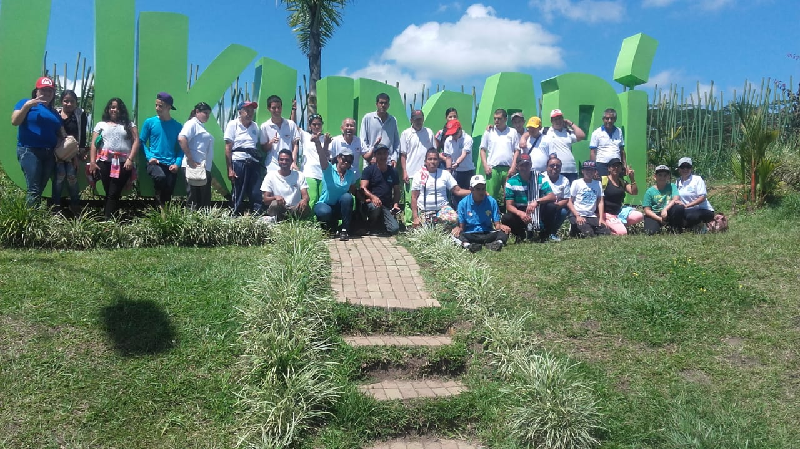

Funrefa Ginebra
Es para nosotros un enorme placer presentar a usted la Fundación de Restauración y Ayuda Familiar FUNREFA, la cual esta trabajado para los niños, niñas, jóvenes y adultos en condición de discapacidad.
El origen de la Fundación nace con un marcado interés: llegar a los hogares de las familias que se encuentran en condición de Vulnerabilidad, brindándoles ayudas que permitan mejorar su calidad de vida y un mejor desarrollo integral y al mismo tiempo establecer en el municipio un ente que vele por esta población teniendo como base la Familia.